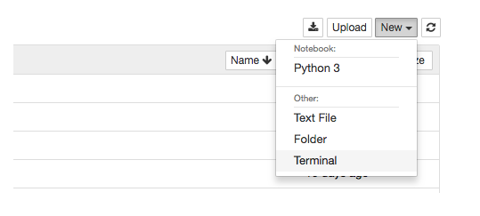

Lab 0: Community Building + Setup
Due at 11:59:59 pm on 8/30/2022.
Starter Files
Download lab00.zip. Inside the archive, you will find starter files for the questions in this lab, along with a copy of the OK autograder.
Submission
By the end of this lab, you should have submitted the lab with python3 ok --submit. You may submit more than once before the deadline; only the final submission will be graded. Check that you have successfully submitted your code on okpy.org.
Community Building Exercise
At the beginning of class, you will be participating in several activities that introduce you to the community of C88C—your TA and most importantly, your fellow classmates.
Set-up for Class
In Data 8 you are doing all your development in the cloud on datahub.berkeley.edu, but we will be using your personal computer for C88C. If you are using the instructional machine in the lab you can ignore this section.
In C8, you mainly work in a python notebook: you type a piece of code into a cell, run the cell, and voila, the output is magically displayed. Furthermore, you can type text in addition to code in a python notebook; all the titles, subtitles, and instructions are text.
However, more often in the real world you would be using a combination of terminal and text editor to run your program. And that’s what we will be doing in this class. All your code goes on to the text editor, and you run the code using Python on the terminal.
Introduction
This lab explains how to use your own computer to complete assignments for C88C. If you are using a school computer, most of the instructions are the same, except you won't have to install anything.
There is a submission for this lab to ensure you have everything set up properly. It is very important you READ THROUGH THE WHOLE LAB.
Setup
Install a terminal
The terminal is a program that allows you to interact with your computer by entering commands. No matter what operating system you use (Windows, MacOS, Linux), the terminal will be an essential tool for C88C.
If you're on a Mac or are using a form of Linux (such as Ubuntu), you already have a program called
Terminalon your computer. Open that up and you should be good to go.
For Windows users, we recommend downloading a terminal called GitBash.
Install Python 3
Python 3 is our primary programming language. You can get Python here. Download one of the installers (for example, "Windows x86-64 MSI installer" or "Mac OS X 64-bit installer"). If your computer is a 64-bit machine, you should download the 64-bit installer. (In general, if your computer is new within the past 2 years, it is likely 64-bit. Ask a TA or lab assistant if you're not sure.)
MacOS users can refer to this video for additional help on setting up Python.
If you're having trouble opening the installer, you can right-click the icon and select "Open".
For Windows users, if you're installing a more recent version of Python, you should make sure to specify during setup to 'Add python.exe to Path', which will allow you to execute thepythoncommand from your terminal.
You can also refer to this video for additional help on setting up Python (up to 1:09 into the video).
If you did not see the aforementioned option during setup, then you will need to manually configure your
PATHenvironment variable; the same video describes how to do this from 5:00 to 5:54.

Install a text editor
The Python interpreter that you installed earlier allows you to run Python code. You will also need a text editor, which will help you write Python code.
A text editor is a program that allows you to edit text files, and often comes with tools to help you customize your experience. You will be using a text editor to create, modify, and save files.
There are many editors out there, each with its own set of features. Visual Studio Code and Atom are the most popular choices among the course staff for writing Python. We highly recommend for this class you use VS Code.
Note: Please, please, please do not use Microsoft Word to edit programs. Word is designed to edit natural languages like English — trouble will ensue if you try to write Python with Word!
For your reference, we've also written some guides on using popular text editors. After you're done with lab, you can take a look if you're interested:
- Visual Studio Code: A full-featured desktop editor with many extensions available to support different languages.
- Atom: A full-featured desktop editor with many extensions available to support different languages.
- Emacs: A command-line editor.
- Vim: A command-line editor.
Pair Programming
Throughout this course, you will have many chances to collaboratively code with others in labs and projects. We recommend you download these pair programming extensions now to use in the future.
For sharing code, you can follow the instructions for your editor of choice:
Using the terminal
Terminal
Terminal is a command line system or tool for you to interact with folders and files on your computer.
All macs automatically come with a terminal. Open it up and play around with it. It looks something like this. You should see a tilde sign (~), which means that you are in your home directory:
If you are using Window, please follow the instructions to download git bash here:
Head to this website and click the windows download link.
You should be able to install Git Bash with most of the default configuration options, with one exception. In the Configuring the terminal emulator to use with Git Bash step, select the second option: Use Windows' default console window.
When you open up the terminal, you start off in something called your home directory.
Your TA will now demonstrate for you how to use the terminal. By the end, you should be able to answer these questions:
- 1.) What is a directory? A file?
- 2.) What does it mean by current directory?
- 3.) What are some basic commands I can use in terminal?
The most common terminal commands are as follows:
- ls - lists out all the files and directories in the current directory
- cd “folder name” - cd stands for “change directory”. cd “folder name” gets you into the directory with the folder name, provided the folder is inside your current directory
- cd.. - exit out to the previous directory
- cd - exits out to home directory
- mkdir - “make directory”, or create a folder
- touch - make a file
- clear - clear previous commands to make terminal look cleaner
To do:
- Make a directory called "c88c"
- Now
cdinto that directory, and make 3 more directories: "labs", "hw", "projects"
Python Interpreter
We can use the terminal to check if your Python 3 interpreter was installed correctly. Try the following command:
python3If the installation worked, you should see some text printed out about the
interpreter followed by >>> on its own line. This is where you can type in Python
code. Try typing some expressions you saw in lecture, or just play around to see
what happens! You can type exit() or Ctrl-D to return to your command line.
Windows troubleshooting:
- If the
python3command doesn't run at all:
Trypython,py, orpy -3instead.- If Python freezes (doesn't display anything at all):
You probably didn't select the "Use Windows' default console window" option when installing Git-Bash manually. Trywinpty python, or just uninstall Git-Bash and reinstall it with the correct options.- If you see an error like
WindowsApps/python: Permission denied:
Go to theWindowsAppsfolder whose path is shown, and renamepython.exetopython.bak.exe(and similarly, renamepython3.exetopython3.bak.exe), then try again.- If Python doesn't run at all, and you used our automated installer:
Go back and try installing using the manual method.- If Python doesn't run at all, and you installed manually:
Make sure you set up your "PATH" correctly as shown above.- If you mixed multiple versions of Python (e.g. 32-bit and 64-bit, or 3.6 and 3.8, etc.):
They may conflict. Occasionally, this becomes extremely difficult to fix—even for instructors.
Uninstall them one-by-one (the most recent one first), then reinstall only the latest 64-bit version.Ask for help if you get stuck!
Note, if you have trouble opening or setting up a terminal on your computer, an alternative option (though this is not recommended) is to use datahub. To open a terminal in datahub, click on “new” in the upper-right hand corner, and click on terminal. Most likely you won't ever need this if everything else is set up properly on your computer, but you may play around with the terminal here if you'd like.

When you open a terminal in datahub, it looks something like this:
Organizing your files
There are many terminal commands that you will be using in this course.
Directories
The first command we'll use is ls. Try typing it in the terminal:
lsThe ls command lists all the files and folders in the current
directory. A directory is another name for a folder (such as the
Documents folder). Since we're in the home directory right now, you
should see the contents of your home directory.
Making new directories
Our next command is called mkdir, which makes new
directories. Let's make a directory called c88c to store all of
the assignments for this class:
mkdir c88cA folder called c88c will appear in our home directory.
Changing directories
To move into another directory, we use the cd command. Try typing the
following command into your terminal:
cd c88cThe cd command will change directories — in other words, it
moves you into the specified folder. In the example above, we chose to
move into the c88c directory.
If we want to go back to our home directory, there are a few ways to do so:
- Type
cd ..(two dots). The..means "the parent directory". In this case, the parent directory ofc88chappens to be our home directory, so we can usecd ..to go up one directory. - Type
cd ~(the tilde). Remember that~means home directory, so this command tells your terminal to change to the home directory, no matter where you currently are. - Type
cd(that is, thecdcommand with no arguments), typing justcdis a shortcut for typingcd ~.
At this point, let's create some more directories. Make sure you are in
the ~/c88c directory, using the necessary cd commands. Then create
projects and labfolders inside of our c88c folder:
cd ~/c88c
mkdir projects
mkdir labNow if we list the contents of the directory (using ls), we'll see two
folders, projects and lab.
Downloading the assignment
We will begin the assignment by first downloading the zip file,
lab00.zip, if you have not already done so. This zip file contains
all the files that we'll need for this lab. Drag this zip file
to your lab folder within the c88c folder you created in a previous step, or use the mv
command to move to file to the correct folder from your terminal.
Extracting starter files
Switch back to the terminal tab. Navigate to the labs folder under your
c88c folder using the cd command, as this is where your lab00 zip file
should be located,. To unzip the file (if you haven't done so already),
do the following
Use the command below to unzip the file.
unzip lab00.zipMake sure you are in the
c88cdirectory in your terminal.
Once you unzip lab00.zip, you should have a new folder called lab00
in the c88c directory which contains the following files:
lab00.py: The template file you'll be adding your code took: A program used to test and submit assignmentslab00.ok: A configuration file forok
You no longer need lab00.zip and can delete it from your c88c folder if you want.
You're now ready to start looking at the code! Don't worry if this seems
complicated — it will get much easier over time. Just keep
practicing! You can also take a look at our UNIX tutorial for a more detailed explanation of terminal commands.
Python Basics
Floating point numbers (floats) behave a lot like real numbers. You can identify a float by the decimal point. All floats have decimal points. To write a floating point number (as a literal) you must add a decimal point!
>>> 3.141592
3.141592
>>> 2*3.141592 # you can mix ints and floats
6.283184
>>> pie = 3.141592 # you can assign values to variables
>>> pie
3.141592
>>> pie/pie
1.0
>>> pie/pie == 1 # a float can be equal in value to an int
True
>>> from math import pi # here is a better pi
>>> pi
3.141592653589793
>>> 5.0/3.0 # this is division of floats, not ints
1.6666666666666667
>>> 2**(1/2) # square root - isn't that transcendental?
1.4142135623730951Expressions follow operator precedence (just like in math). Operations are performed one at a time in a specific order. Parenthesis are used to specify order (again, just like in math - remember PEMDAS?).
>>> 2 + 3 - 4 + 5 # equal precedence, left to right
6
>>> 2 + 3 - (4 + 5) # order matters - parentheses are your friend
-4
>>> (((2 + 3) - 4) + 5) # explicit order of the first example
6
>>> 2 + 3 * 4 # * and / bind more tightly than + or -
14
>>> 2 + (3 * 4)
14
>>> (2 + 3) * 4
20
>>> 2 + 3 / 4 * 5 # what about * and / ?
5.75An expression can have multiple return values, called a tuple:
>>> 2, 3
(2, 3)
>>> x, y = 1, pi
>>> y
3.141592653589793Doing the assignment
Understanding problems
Question 1: Twenty Twenty Two
Open up lab00.py in your text editor. You should see something like this:
def twenty_twenty_two():
"""Come up with the most creative expression that evaluates to 2022,
using only numbers and the +, *, and - operators.
>>> twenty_twenty_two()
2022
"""
return ______
return 2 * 1000 + 22The lines in the triple-quotes """ are called a docstring, which is a
description of what the function is supposed to do. When writing code in C88C,
you should always read the docstring!
The lines in the docstring that begin with >>> are called doctests.
Doctests explain what the function does by showing actual Python code.
The lines underneath the >>> show the expected output from running the above Python code.
In twenty_twenty_two,
- The docstring tells us to "come up with the most creative expression that
evaluates to 2022," but that we can only use numbers and arithmetic operators
+(add),*(multiply), and-(subtract). - The doctest for
twenty_twenty_two()checks that no matter how we do our calculation,twenty_twenty_twoshould return the number 2022.
You should never change the doctests in your assignments! The only part of your assignments that you'll need to edit is the code.
Writing code
Once you understand what the question is asking, you're ready to start writing
code! You should replace the underscores in return ______ with an expression that
evaluates to 2022. What's the most creative expression you can come up with?
- Open lab00.py in your text editor. Start by simply returning 2022. This is not very creative, but it gives the right answer.
Run Python on your code in lab00.py using the interactive flag. When you get the prompt, type the name of the function, just like in the doc string. Did you get the right answer?
python -i lab00.py >>> twenty_twenty_two() 2022 >>> exit()- Exit Python to get back to your terminal shell. You will need to do that each time you run Python interactively.
You are going to want to learn to test your code before submitting it to the autograder. This always begins with reading it, thinking about it and convincing yourself it should work. Come up with examples that verify it really does what it should. That is what goes into the docstring.
Running tests
In C88C, we will use a program called ok to test our code. ok will be
included in every assignment in this class.
Back to the terminal! Make sure you are in the lab00 directory we created
earlier (remember, the cd command lets you change
directories).
In that directory, you can type ls to verify that there are the following
three files:
lab00.py: the starter file you just editedok: our autograderlab00.ok: a configuration file for OK
Now, let's test our code to make sure it works. You can run ok with this
command:
python3 ok -q twenty_twenty_twoIf you wrote your code correctly, we should see a successful test:
=====================================================================
Assignment: Lab 0
OK, version v1.4.1
=====================================================================
~~~~~~~~~~~~~~~~~~~~~~~~~~~~~~~~~~~~~~~~~~~~~~~~~~~~~~~~~~~~~~~~~~~~~
Running tests
---------------------------------------------------------------------
Test summary
Passed: 1
Failed: 0
[ooooooooook] 100.0% passedIf you didn't pass the tests, ok will instead show you something like this:
---------------------------------------------------------------------
Doctests for twenty_twenty_two
>>> from lab00 import *
>>> twenty_twenty_two()
2013
# Error: expected
# 2022
# but got
# ...
---------------------------------------------------------------------
Test summary
Passed: 0
Failed: 1
[k..........] 0.0% passedFix your code in the text editor until the test passes.
Submitting the assignment
Now that you have completed your first C88C assignment, it's time to turn it in. Note that it is not sufficient to receive credit for an assignment simply by running the autograder per the last section. You must follow these steps to submit and get points!
Step 1: Submit with ok
In your terminal, make sure you are in the directory that contains ok. If
you aren't there yet, you can use this command:
cd ~/Desktop/c88c/labs/lab00Next, use ok with the --submit option:
python3 ok --submitThis will prompt you for an email address if you haven't run Ok before. Please follow these directions, and refer to the troubleshooting steps on that page if you encounter issues. After that, Ok will print out a message like the following:
Submitting... 100% complete
Backup successful for user: ...
URL: https://okpy.org/...Step 2: Verify your submission
You can follow the link that Ok printed out to see your final submission, or you can go to okpy.org. You will be able to view your submission after you log in.
Make sure you log in with the same email you provided when running
okfrom your terminal!
You should see a successful submission for Lab 0.
Congratulations, you just submitted your first C88C assignment!
You can use the
--helpflag to get more information on Ok:python3 ok --helpThis flag works just like it does for UNIX commands we used earlier.
Appendix: Useful Python command line options
When running a Python file, you can use flags on the command line to inspect your code further. Here are a few that will come in handy. If you want to learn more about other Python flags, take a look at the documentation.
Using no flags will run the code in the file you provide and return you to the command line.
python3 lab00.py-i: The-ioption runs your Python script, then opens an interactive session. To exit, typeexit()into the interpreter prompt. You can also use the keyboard shortcutCtrl-Don Linux/Mac machines orCtrl-Z Enteron Windows.If you edit the Python file while running it interactively, you will need to exit and restart the interpreter in order for those changes to take effect.
python3 -i lab00.py-m doctest: Runs doctests in a particular file. Doctests are marked by triple quotes (""") and are usually located within functions.python3 -m doctest lab00.py
Congratulations on finishing your first lab! And welcome to C88C.